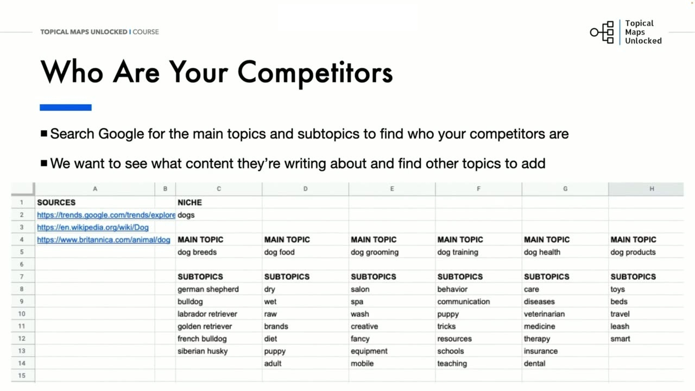
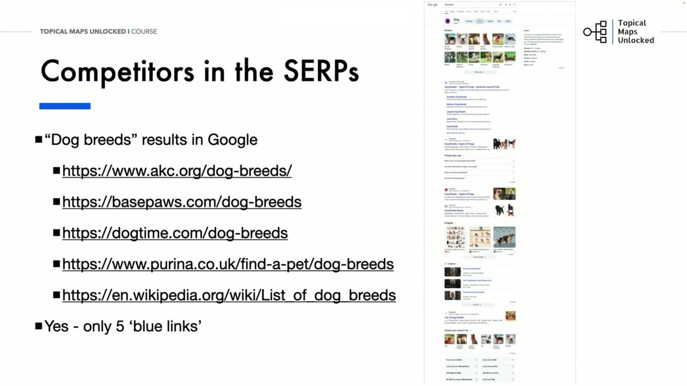
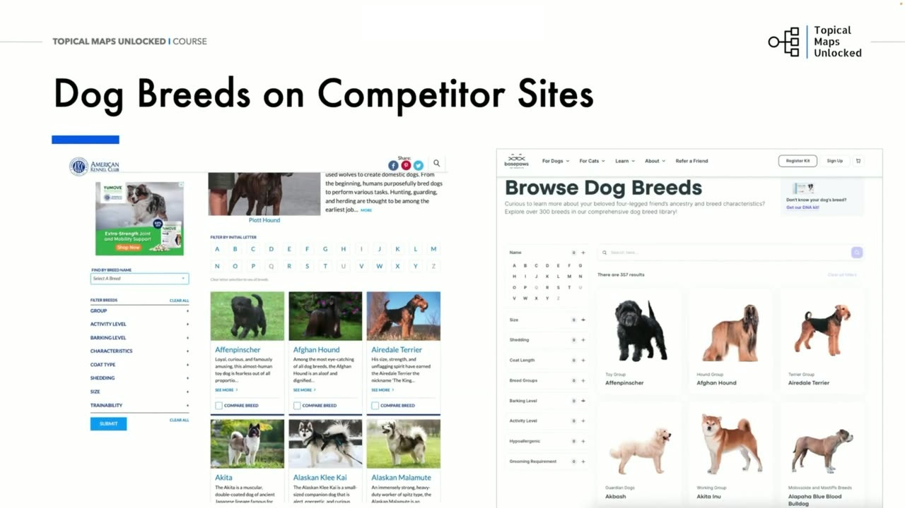
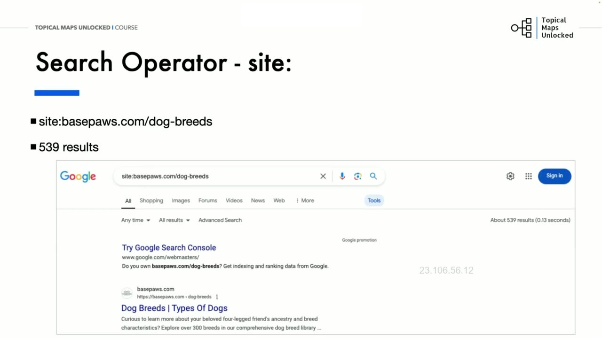
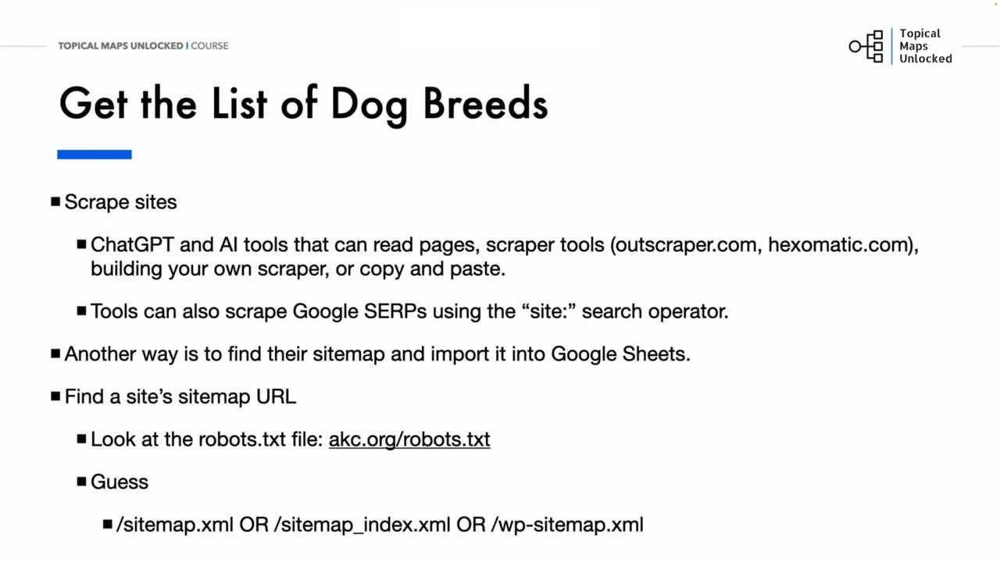
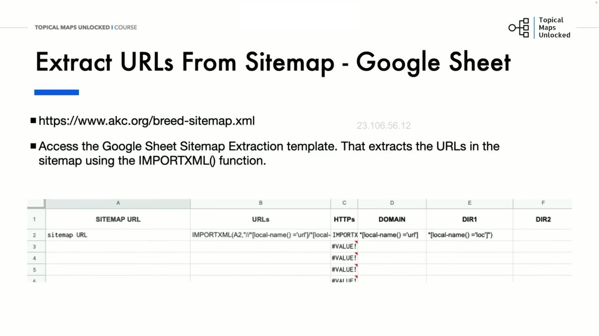
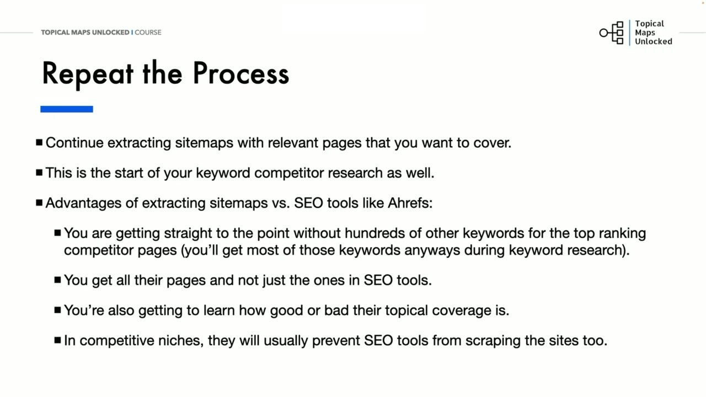

Competitor Research and Analysis
1. Bản chất của nghiên cứu đối thủ: Tìm ra khoảng trống chủ đề và từ khóa quan trọng
Trong bài học này, chúng ta sẽ cùng nhau tìm hiểu phương pháp thực hiện nghiên cứu đối thủ cạnh tranh (Competitor Research and Analysis) nhằm tìm ra các chủ đề và từ khóa quan trọng cần phải đề cập trên website của bạn. Bản chất của việc nghiên cứu đối thủ không phải là đi sao chép mù quáng, mà là tìm hiểu xem ai là đối thủ thực sự của bạn và họ đang bao phủ những nội dung gì, từ đó đảm bảo trang web của bạn không bị thiếu sót bất kỳ mảnh ghép thông tin quan trọng nào so với thị trường.
Quy trình bắt đầu bằng việc tìm kiếm trực tiếp trên Google để xác định các đối thủ hàng đầu, sử dụng chính các chủ đề chính (Main Topics) và chủ đề phụ (Subtopics) đã xác định từ bài học trước làm truy vấn tìm kiếm. Ở giai đoạn này, chúng ta tập trung vào các chủ đề chính để xem ai đang đứng đầu ngành và xem mức độ họ bao phủ những chủ đề đó sâu rộng đến đâu.
Ví dụ thực tế với chủ đề Dog Breeds (Các giống chó): Khi gõ cụm từ này lên Google, kết quả lập tức chỉ ra hai đối thủ khổng lồ đầu ngành:
- AKC (American Kennel Club - Câu lạc bộ Chó giống Mỹ): Đây là tổ chức phi lợi nhuận lâu đời và lớn nhất thế giới về đăng ký các giống chó thuần chủng. Họ đóng vai trò như cơ quan thẩm quyền tối cao, ủng hộ việc nuôi chó như thành viên gia đình và hướng dẫn chăm sóc chó chuẩn mực. Nhìn vào menu điều hướng của AKC, bạn có thể thấy họ bao phủ rất nhiều danh mục thông tin phong phú vì tất cả đều liên quan trực tiếp đến sứ mệnh tổ chức của họ.
- Basepaws (basepaws.com): Đây là công ty cung cấp dịch vụ xét nghiệm DNA và di truyền học cho thú cưng. Menu điều hướng chính của họ tập trung vào các chủ đề cốt lõi liên quan đến xét nghiệm DNA, và họ chỉ bắt đầu đi sâu vào cẩm nang các giống chó khi người dùng truy cập vào phần kiến thức học tập (Learn section) trên website của họ.

2. Sự biến đổi của trang kết quả tìm kiếm (SERP) giữa năm 2023 và 2024
Yoyao phân tích một hiện tượng cực kỳ thú vị và quan trọng trên trang kết quả tìm kiếm (SERP) cho từ khóa dog breeds: Nếu nhìn lướt qua, bạn sẽ thấy chỉ có đúng 5 liên kết màu xanh truyền thống (organic blue links). Tuy nhiên, nếu đếm thêm các liên kết trang con mở rộng (sitelinks) nằm dưới kết quả số 1 của AKC, tổng cộng có tới 10 liên kết màu xanh xuất hiện trên trang nhất.
Để giúp người học có tư duy phân tích nhạy bén, Yoyao đặt hai ảnh chụp màn hình SERP cạnh nhau để so sánh sự thay đổi ngoạn mục giữa năm 2023 (bên trái) và năm 2024 (bên phải):
- Nửa trên trang nhất: AKC.org luôn vững vàng ở vị trí số 1. Nhưng sang năm 2024, AKC đã được Google cấp thêm một khối sitelinks khổng lồ chiếm trọn không gian nổi bật nhất màn hình. Ở vị trí số 2, Basepaws xuất hiện ngay phía trên hộp câu hỏi People Also Ask (Mọi người cũng hỏi).
- Nửa dưới trang nhất: Năm 2023, Google hiển thị một dải nhiều hình ảnh các giống chó cùng phần Tin tức hàng đầu (Top Stories). Nhưng sang năm 2024, Google đã thay thế bằng một khối Video trực quan và đồ họa thông tin phong phú.
- Sự dịch chuyển của Wikipedia: Do sự bùng nổ của các tính năng SERP mới, trang Wikipedia về danh sách các giống chó đã bị đẩy xuống tận đáy trang nhất, mặc dù về mặt thứ hạng thực tế họ chỉ giảm đúng 1 bậc (từ vị trí số 4 năm 2023 xuống vị trí số 5 năm 2024).
Sự thay đổi này là một điểm cần suy nghĩ và điều chỉnh khi nghiên cứu đối thủ: Bạn không chỉ nhìn vào thứ hạng mà phải quan sát toàn diện các tính năng SERP để biết người dùng đang được phục vụ những định dạng nội dung nào (chữ viết, video, công cụ lọc hay hình ảnh).

3. Phân tích tính năng trải nghiệm: Bộ lọc đa năng (Faceted Navigation) của đối thủ
Quay trở lại hai kết quả hàng đầu của AKC và Basepaws: Cả hai trang này đều là các Trang trung tâm (Hub Pages) đóng vai trò như một thư mục liên kết nội bộ tỏa ra hàng trăm trang bài viết riêng lẻ cho từng giống chó cụ thể.
Yoyao chỉ ra một chi tiết trải nghiệm người dùng đắt giá cần học hỏi: Các tính năng bộ lọc (Filter navigation) ở thanh bên trái:
- Cả AKC và Basepaws đều thiết lập một bộ lọc rất chi tiết ở thanh bên: cho phép người dùng lọc chó theo kích thước (nhỏ, trung bình, lớn), mức độ rụng lông, mức độ thân thiện với trẻ em, mức độ năng động hoặc nhóm phân loại nghiệp vụ.
- Nếu bạn đang có kế hoạch xây dựng một website lớn về thú cưng, việc tích hợp một bộ lọc tương tự sẽ nâng tầm trải nghiệm người dùng vượt bậc, giúp họ tìm kiếm đúng giống chó phù hợp chỉ sau vài cú nhấp chuột.
- Trong khi đó, kết quả ở vị trí số 3 và số 4 tuy không có bộ lọc bên cạnh nhưng họ lại trang bị một thanh tìm kiếm chuyên dụng đặt ngay đầu trang để người dùng gõ tên giống chó nhanh chóng.

4. Sử dụng toán tử site: để kiểm tra số lượng bài viết của đối thủ
Bây giờ, nếu bạn muốn biết mỗi đối thủ đang bao phủ chính xác bao nhiêu giống chó thì phải làm thế nào? Chẳng lẽ bạn phải ngồi lật từng trang phân trang (pagination) và đếm thủ công từng bài viết một? Cách làm đó quá tốn thời gian và thiếu chuyên nghiệp.
Giải pháp tối ưu là sử dụng Toán tử tìm kiếm site: của Google:
- Gõ lệnh:
site:akc.org/dog-breedslên thanh tìm kiếm Google. Nhớ nhấp vào mục Công cụ (Tools) để xem con số thống kê chính xác: Google hiển thị khoảng 806 kết quả bài viết trong thư mục con này! - Thực hiện tương tự với đối thủ thứ hai:
site:basepaws.com/dog-breeds: Kết quả trả về khoảng 539 trang.
Mặc dù 539 trang là con số ít hơn so với 806 trang của AKC, nhưng việc phải bấm vào 539 liên kết này để sao chép thủ công tên từng giống chó vào bảng tính vẫn là một cực hình. Vì vậy, chúng ta cần một phương pháp tự động hóa thông minh hơn rất nhiều.

5. Các công cụ cào dữ liệu và Giới hạn của việc cào SERP
Yoyao thảo luận về các công cụ cào dữ liệu (Web Scrapers) hiện nay trên thị trường. Bạn có thể sử dụng các phần mềm chuyên dụng như Octoparse, Hexomatic hoặc tận dụng các mô hình AI hiện đại như ChatGPT để đọc và trích xuất danh sách văn bản từ trang web.
Tuy nhiên, các phương pháp này đều có những nhược điểm và rào cản nhất định:
- Bạn phải mất thời gian cấu hình bộ chọn (selectors), thiết lập luồng cào dữ liệu và cung cấp danh sách URL đầu vào cho phần mềm.
- Nhiều người thậm chí phải thuê lập trình viên xây dựng công cụ riêng hoặc thuê trợ lý ảo sao chép dán thủ công.
- Quan trọng nhất: Nếu bạn dùng công cụ cào dữ liệu từ kết quả tìm kiếm của lệnh
site:trên Google, bạn chỉ lấy được những trang đã được Google lập chỉ mục (indexed pages). Điều gì sẽ xảy ra nếu đối thủ có những bài viết mới xuất bản cực kỳ hay nhưng chưa kịp lập chỉ mục? Bạn sẽ hoàn toàn bỏ sót chúng!

6. Khai thác Sitemap XML của đối thủ: Cách nhanh nhất lấy 100% cấu trúc trang web
Và đây chính là bí quyết mà Yoyao chia sẻ: Khai thác trực tiếp Sơ đồ trang web (Sitemap XML) của đối thủ. Đây là con đường nhanh nhất, dễ dàng nhất và chuẩn xác 100% để thu thập toàn bộ các trang đang tồn tại trên một website.
Mọi website đều muốn các công cụ tìm kiếm biết được toàn bộ các trang trên tên miền của họ để lập chỉ mục đầy đủ, do đó họ bắt buộc phải khai báo đường dẫn Sitemap trong tệp robots.txt:
- Truy cập:
domain.com/robots.txtđể tìm dòngSitemap: https://... - Nếu website không khai báo trong robots.txt, bạn có thể thử 3 đuôi phổ biến:
/sitemap.xml,/sitemap_index.xml, hoặc/wp-sitemap.xml(đối với các website xây dựng trên mã nguồn mở WordPress). - Đối với các trang web lớn như AKC, sitemap chính sẽ phân chia thành nhiều sitemap con cho từng chuyên mục. Bạn chỉ cần tìm đúng sitemap chứa các giống chó:
https://www.akc.org/breed-sitemap.xml.

7. Tự động hóa với Google Sheets IMPORTXML và Ưu thế vượt trội so với Ahrefs/Semrush
Để tự động hóa hoàn toàn quy trình này, Yoyao cung cấp mẫu bảng tính Sitemap Extraction Google Sheet được lập trình sẵn công thức:
- Bạn chỉ cần dán đường dẫn Sitemap XML của đối thủ vào ô A2.
- Tại ô B2, công thức
IMPORTXMLđã được viết sẵn cú pháp XPath để tự động bóc tách tất cả các liên kết nằm trong thẻ<loc>. (Yoyao lưu ý: ban đầu ông bỏ dấu bằng=ra để tránh việc Google Sheets tự động gửi lệnh gọi liên tục làm vượt quá giới hạn API hàng ngày; khi bạn sẵn sàng sử dụng chỉ cần gõ thêm dấu bằng vào đầu công thức). - Ngay khi kích hoạt, toàn bộ danh sách hàng ngàn URL của đối thủ sẽ tự động đổ về bảng tính và được tách thành các cột thư mục con ngăn nắp.
- Để làm sạch các dấu gạch ngang (ví dụ
golden-retriever), bạn chỉ cần dùng hàmSUBSTITUTEtrong bảng tính hoặc dán sang công cụ xử lý văn bản như TextTools.org để đổi dấu gạch ngang thành khoảng trắng.
Yoyao kết luận: Phương pháp trích xuất Sitemap này vượt trội hoàn toàn so với việc dùng Ahrefs hay Semrush bởi 3 lý do chiến lược:
- Tập trung tuyệt đối vào từ khóa mục tiêu thực tế: Mọi người đều đưa từ khóa chính mà họ nhắm mục tiêu vào chính đường dẫn URL bài viết. Bạn nhìn thấy ngay chiến lược của họ mà không bị hoa mắt bởi hàng vạn từ khóa thứ hạng phụ trợ.
- Lấy trọn vẹn 100% trang web đã tạo ra: Bạn nhìn thấy toàn bộ quy mô nội dung của đối thủ, bất kể trang đó đã có thứ hạng hay chưa, giúp đánh giá chính xác mức độ bao phủ bản đồ chủ đề của họ là tốt hay xấu.
- Vượt qua lệnh cấm bot trong robots.txt: Rất nhiều website lớn trong các ngách cạnh tranh cao chủ động chặn bot của Ahrefs/Semrush quét web để giấu chiến lược, nhưng họ bắt buộc phải để mở Sitemap XML cho Google. Do đó, trích xuất Sitemap thủ công chính là vũ khí tối thượng giúp bạn nắm trọn bí mật kiến trúc của đối thủ cạnh tranh!

Nguồn và đối chiếu
- Topical Maps Unlocked 2.0 · 03-Competitor Research and Analysis (Video bài học chính).
- Đối chiếu ngữ nghĩa với bản tiếng Anh: Bản Tiếng Anh/05-Topical and Keyword Research/03-Competitor Research and Analysis.mp4.